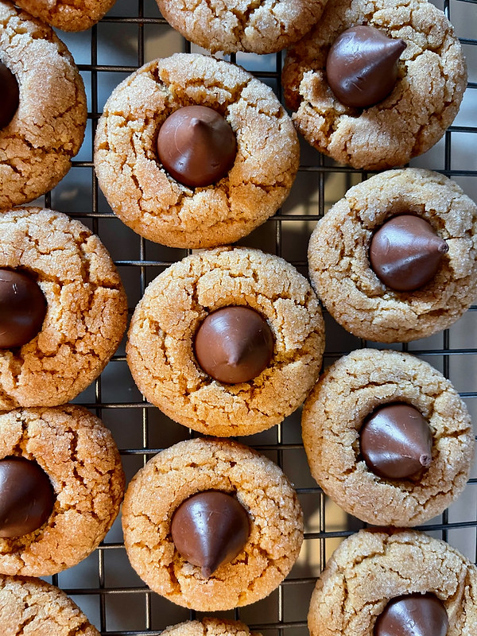

Peanut Butter Cookies

Peanut Butter cookies with a Hershey's Kiss on them like my dad makes on holidays
These cookies only have 4 ingredients in them and they are very yummy and easy to make
Home
Ingredients
- 1 Cup Sugar
- 1 Cup Creamy Peanut Butter
- 1 Large Egg
- 18 Hershey's Kisses
Steps
- Preheat oven to 350 degrees F (175 C)
- Stir sugar, peanut butter, and egg together in a large bowl until well combined.
- Shape dough into 1-inch balls. If dough is too sticky, refrigerate until easy to handle, about 30 minutes.
- Place dough balls on an ungreased cookie sheet.
- Bake in the preheated oven until edges are set and tops are slightly cracked, about 10 minutes.
- Press a chocolate kiss into center of each warm cookie. Remove to a wire rack to cool.